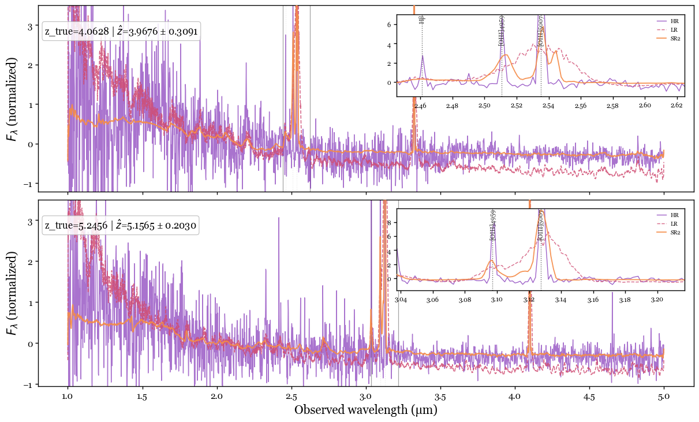

Pioneering the application of advanced machine learning techniques—including manifold learning, neural networks, and physics-informed AI—to unlock new insights in extragalactic astrophysics and galaxy evolution. Our work bridges cutting-edge computational methods with astronomical data to push the boundaries of what we can learn from observations.
Developing a physics-informed artificial intelligence framework to reconstruct higher-resolution galaxy spectra from low-resolution observations. Spectral resolution fundamentally determines the level of physical information extractable from galaxy spectra—high-resolution data allow clean separation of emission lines and enable robust measurements of redshift, star-formation rates, chemical abundances, and ionization conditions.

Figure: Comparison of a low-resolution prism spectrum (purple) with the AI super-resolved spectrum (orange). The model recovers emission-line structure that is blended at low spectral resolution, demonstrating substantial improvements in emission-line fidelity and signal-to-noise.
Advanced application of Self-Organizing Maps (SOMs) to analyze high-dimensional galaxy spectral energy distributions and scaling relations. This approach enables us to understand the underlying structure of galaxy populations and predict spectroscopic properties from photometric observations.